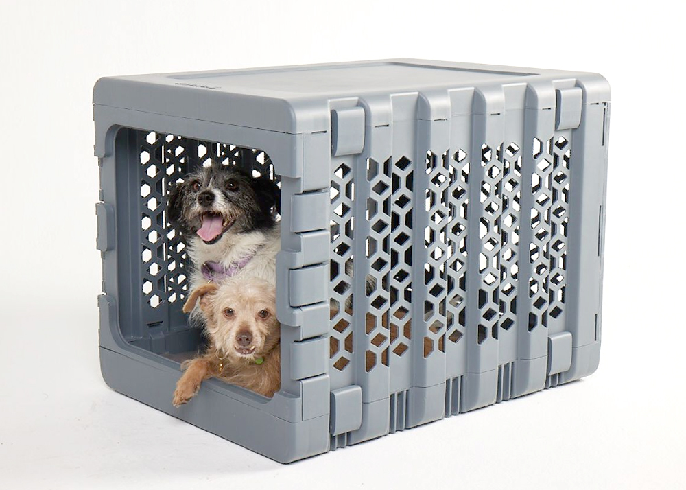

From the pipeline
Locked in. Built around.



PRO never redraws your product. We cut it from your photo, lock it in place, and generate the scene around it. What ships is your photograph inside an AI-built room — accurate by construction, not by promise.
Around 30% of online shoppers have returned a product because it looked different from the listing, and AI-altered imagery runs a measurably higher return rate. Most AI tools redraw your product every time — a believable photo of something subtly not yours. PRO removes the possibility: the product in the frame is your photo, untouched.
Same intake as Standard. The order of operations is what changes.
One clean product photo per angle you want in the final imagery. A pet or prop photographed with the product can be locked together with it.
We cut the product from your photo and place it at its final position and size. From this point those pixels are frozen — nothing redraws them.
AI paints the room around your locked product — floor, light, decor, shadow — to your brand's palette and staging.
Your original pixels are stamped back over the frame. If the scene engine nudged the product at all, the frame is rejected automatically and rerun.

| Standard | PRO | |
|---|---|---|
| Product in the frame | AI-drawn, spec-checked against your photos | Your photo's pixels, never redrawn |
| Drift risk | Possible — caught by machine check + human review | None, by construction |
| Angles | Any you can brief | The angles you photograph |
| People & pets | Interacting with the product | Beside it, or photographed with it |
| Best for | Range, volume, concepts | Hero shots, PDPs, accuracy-critical SKUs |
Free PRO sample on your own product — see your actual pixels staged before you commit to anything.